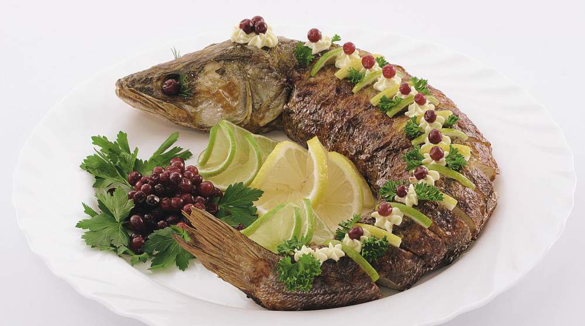

Основой всех рыбных супов является рыбный бульон, и от того, как он приготовлен, во многом зависят вкусовые достоинства супа.
В старину, например, «ухой» называли только чистый рыбный навар (бульон). Теперь же в литературе по кулинарии можно встретить рецепты ухи с разными наполнителями.
Чтобы приготовить настоящую рыбацкую уху по всем правилам старинной технологии, воспользуйтесь некоторыми рекомендациями, приведенными ниже.
Уха готовится обязательно из нескольких видов рыб, и прежде всего пресноводных – ершей, окуней, пескарей, судака, налима, сига, стерляди и др. Каждая рыба, принадлежащая тому или иному виду, обладает определенными, только ей присущими качествами. Так, ерш, окунь и сазан придают ухе клейкость (наваристость) и вкус, а пескарь, налим, сиг и стерлядь – нежность и особую сладость.
Самой вкусной получается уха, приготовленная из живой или только что заколотой рыбы. Стоит рыбе полежать хотя бы несколько часов, как уха из нее не получится такой вкусной.
В уху из живой рыбы для вкуса можно добавить только одну луковицу.
Если же уха варится из снулой рыбы, то в нее обязательно кладут белые коренья, специи (перец, лавровый лист), лук, зелень и несколько ломтиков лимона.
Чтобы уха получилась наваристой, рыбную мелочь закладывают в самом начале варки и варят ее 1,5–2 часа до полного разваривания, то есть до тех пор пока она не превратится в кашу, а затем процеживают и охлаждают.
В охлажденный бульон закладывают куски крупной рыбы, варят ее на слабом огне до готовности, а затем подают с бульоном, раскладывая в каждую суповую миску по куску рыбы.
Что касается количества рыбы, которое необходимо для приготовления наваристой и вкусной ухи, то рыбы лучше взять из расчета 1 кг на 1,0–1,5 л воды.
Чтобы уха получилась светлой и прозрачной, можно использовать рыбную икру, полученную при потрошении рыбы, или взбитые яичные белки. Для осветления 1 л бульона необходимо взять 1/3 стакана икры, растолочь ее как можно мельче, влить полстакана холодной воды, размешать, влить стакан процеженной горячей ухи, размешать и теплой влить в общую процеженную уху, тщательно перемешав. Уху с оттяжкой накрывают крышкой, проваривают на слабом огне 10–15 минут, до тех пор пока она не станет прозрачной, а затем процеживают через плотную салфетку и вновь доводят до кипения.
Правильный рыбный бульонРыбные пищевые отходы (обработанные) – 150 г, лук репчатый – 7 г, петрушка – 7 г.
Наилучший по вкусу бульон – из судака, окуней, ершей и рыб осетровых пород. Головы леща, сазана, воблы, плотвы использовать не рекомендуется, так как бульон из них может горчить.
Обработанные пищевые отходы рыбы – головы, кости, плавники и кожу – тщательно промыть. Крупные кости и головы перед варкой разрубить на части, причем у голов предварительно следует удалить жабры. Положить в котел, налить холодную воду из расчета 4–5 л на 1 кг, добавить петрушку и репчатый лук, закрыть котел крышкой и нагревать до кипения. После этого крышку снять и продолжать варку при слабом кипении в течение 50–60 минут. Во время варки периодически удалять пену и жир.
Готовый бульон снять с огня и через 20–30 минут процедить. При варке бульона из рыб осетровых пород голову вынуть через час с момента начала варки бульона, отделить мякоть, а хрящи отдельно варить до размягчения (3–4 часа). Хрящи используют для рыбных заправочных супов.
Уха речнаяЕрши или окуни – 150 г, икра паюсная – 8 г, петрушка – 5 г, сельдерей – 5 г, лук – 10 г.
Обработанную рыбу залить холодной водой и, постепенно нагревая, довести бульон до кипения, затем удалить пену, добавить петрушку, лук и продолжать варку в течение 40–50 минут. Готовый бульон процедить и осветлить оттяжкой из икры.
Для приготовления оттяжки икру растереть в ступке, постепенно прибавляя воду (по 1–2 ложки) до тех пор, пока не получится однородная масса (икринки должны быть тщательно растерты). После этого массу развести холодной водой (0,4–0,5 л воды на 100 г икры) и добавить соль.
Приготовленную оттяжку влить в бульон, хорошо размешать, закрыть посуду крышкой, нагреть до кипения, удалить пену и продолжать варку при слабом кипении 20–30 минут. Готовый бульон снять с огня и дать ему отстояться (оттяжка оседает на дно), а затем процедить.
При изготовлении большого количества ухи оттяжку можно вводить в два приема. При варке в бульон следует добавить стебли петрушки и сельдерея, которые придают бульону (ухе) приятный аромат и красивый зеленоватый оттенок.
Уху подавать в бульонных чашках. Отдельно на пирожковой тарелке можно подать расстегаи или кулебяку с вязигой или рыбным фаршем.
Лучшая уха получается из мелкой рыбы – ершей и окуней.
Уха из налимовБульон (уха) – 400 г, мясо и печень налима – 90 г, лимон – 1/5 шт., перец горошком, зелень.
С налима снять кожу, отделить печень, после чего рыбу тщательно промыть, а затем нарезать на порционные куски. Сварить рыбу так же, как стерлядь. Печень сварить отдельно в подсоленной воде.
Подавать уху с куском рыбы и печени. Отдельно подать ломтик лимона и мелко нарезанную зелень. К ухе можно подать расстегаи с вязигой.
Уха рыбацкаяБульон (уха) – 400 г, судак свежий или налим – 30 г, картофель – 150 г, лук репчатый – 20 г, масло сливочное – 5 г, перец горошком, лавровый лист, зелень.
Мелкую рыбу выпотрошить, хорошо промыть, соединить с пищевыми отходами, полученными после обработки налима, и приготовить прозрачный бульон так, как описано выше. После окончания варки бульон процедить.
В бульон заложить картофель целыми клубнями, лук головками, куски подготовленной рыбы (судака и налима) и варить 25–30 минут, снимая появляющуюся на поверхности пену. За 10–15 минут до окончания варки добавить перец, лавровый лист и соль.
После окончания варки в бульон положить сливочное масло.
Подавать уху с кусками рыбы, картофелем, луком и зеленью.
Так же можно приготовить рыбацкую уху из сома и щуки.
Уха царская из форели и осетровыхНа 4 порции: крепкий куриный бульон – 2 л, филе форели – 300 г, филе осетрины – 200 г, филе судака – 100 г, лук-шалот – 1 шт., петрушка, укроп, чеснок, соль, перец.
Несмотря на явную несуразность для русского человека сочетания рыбы и куриного бульона, поверьте: все повара стран Юго-Восточной Азии полагают, что именно такое сочетание продуктов для ухи считается оптимальным. Более того, на курином бульоне прекрасно получаются и морепродукты – рецепт, проверенный автором лично!
В кипящий бульон положить крупно порезанное рыбное филе, маленькую луковицу шалота, пучок петрушки, измельченный зубчик чеснока, соль, перец. Варить на небольшом огне 15 минут. Подавать в глиняных горшочках, украсив свежим укропом.
Простая финская ухаНа 4 порции: форель – 600 г, вода – 3/4 л, соль – 1/2 ст. ложки, луковица – 1 шт., душистый перец – 4 горошины, картофель – 4 шт. (крупные), пшеничная мука – 1,5 ст. ложки, сливки – 1/2 л, сливочное масло – 1 ст. ложка, петрушка, укроп, зеленый лук.
От русской ухи эта в принципе отличается тем, что готовится не из ершиков и окуньков, а с истинно финским размахом – из форели. Воду с пряностями вскипятить, добавить очищенный и нарезанный картофель. Пока картофель еще недоварен, опустить куски рыбы и пассерованный лук. Добавить муку, размешанную в сливках. Все вместе кипятить до полной готовности картофеля.
Готовую уху (а именно к моменту приготовления она и будет готова) приправить маслом и зеленью. Подавать в глиняном горшочке с расстегаем. Рецепты расстегаев смотрите отдельно в нашей книге про самую вкусную в мире выпечку.
Уха ростовскаяБульон (уха) – 400 г, судак – 95 г, картофель – 150 г, петрушка – 20 г, лук – 25 г, помидоры – 85 г, масло сливочное – 10 г, лавровый лист, перец, зелень.
В процеженный бульон из рыбных костей заложить картофель, лук, петрушку, нарезанные дольками, и варить в течение 20–25 минут. За 10–15 минут до окончания варки в кипящий бульон положить филе судака (1–2 куска), а через несколько минут – помидоры и специи (лавровый лист, перец).
По окончании варки в уху добавить сливочное масло.
Уха из ершей и окуней[1]На 2 кг рыбы (по 1 кг ершей и окуней): лук репчатый – 2 шт., корень петрушки – 3–4 шт., зелень укропа – 1 пучок, соль и специи по вкусу.
Ершей и окуней промыть и выпотрошить, удалив жабры и внутренности. С окуня снять филе без кожи. Ершей и оставшиеся после разделки окуней головы, кожу и кости залить холодной водой (3 л), добавить лук, корень петрушки, соль, специи и варить 2–3 часа до полного разваривания ершей. Рыбу отцедить через сито. Бульон вскипятить, опустить в него филе окуня, варить его до готовности, переложить в тарелку с укропом, залить бульоном и подать к столу. Отдельно на тарелочке подать ломтики лимона и веточки зелени.
Для вкуса в бульон можно добавить отвар из отдельно сваренного в небольшом количестве ухи нерассыпчатого картофеля сладких сортов.
Уха из ершей и окуней с обжаренными кореньямиНа 2 кг рыбы (по 1 кг ершей и окуней): лук репчатый – 3 шт., корни петрушки и сельдерея – по 3–4 шт., лук-порей – 1/2 шт., зелень петрушки или укропа – 1 пучок, сливочное масло – 1–2 ст. ложки, соль и специи по вкусу.
Лук и белые коренья обжарить на сливочном масле, добавить их в холодную воду с подготовленными ершами и отходами после разделки окуней и варить уху так же, как указано в предыдущем рецепте.
Для придания ухе более ярко выраженного вкуса при варке бульона можно добавить 1/2 стакана сухого белого вина.
Уха из ершей, окуней и налима с оттяжкойНа 2 кг рыбы (по 1 кг ершей и окуней, 0,5 кг налима): лук репчатый – 2 шт., корни петрушки и сельдерея – 4–5 шт., зелень – 1 пучок, икра от разделанной рыбы – 1/3 стакана, лимон – 1/4 шт., шампанское – 1/2 стакана.
Ершей выпотрошить, окуней и налима разделать на филе без кожи. Варить уху с луком, кореньями и рыбными отходами, как указано в предыдущих рецептах.
В процеженной после варки ухе варить кусочки филе окуня и налима, затем вынуть их, а уху осветлить икрой и добавить шампанское.
В суповую тарелку положить зеленый укроп, на него – кусочки филе окуня и налима и осторожно залить осветленным бульоном. К ухе подать ломтики лимона, а на пирожковой тарелке – расстегай, кулебяку или пирожки с рыбой.
Уха с рыбными кнелямиНа 2 кг рыбы (по 1 кг ершей и окуней): лук репчатый – 1–2 шт., корень петрушки – 3–4 шт., зелень – 1 пучок, лимон – 1/4 шт., соль и специи по вкусу.
Уху сварить из ершей и отходов от окуней, процедить, довести до кипения и варить в ней кнели, приготовленные из филе окуня, не более 10 минут. При подаче в суповую тарелку положить зелень укропа, ломтики лимона, сваренные рыбные кнели и все залить бульоном.
Как рекомендуется и в предыдущем рецепте, для остроты и пикантности вкуса в уху можно добавить 1/2 стакана шампанского или 1/4 рюмки хереса.
Уха из стерляди или осетрины с шампанскимНа 1 кг ершей, стерляди – 1–1,5 кг: лук репчатый – 2 шт., корни петрушки, сельдерея – по 3–4 шт., зелень – 1 пучок, икра от разделанной рыбы (ершей, окуней) – 1/2 стакана, лук (шинкованный) – 3–4 ст. ложки, лимон – 1/2 шт., шампанское – 1/2 бутылки.
Отварить уху из ершей с кореньями, процедить и осветлить икрой.
Стерлядь или звенья осетрины нарезать кусками, вытереть насухо полотенцем, положить в горячую прозрачную уху и варить рыбу на слабом огне до готовности (примерно 15 минут после закипания). Куски готовой стерляди или осетрины положить в суповую тарелку (или миску), посыпать зеленью укропа и осторожно залить процеженной ухой.
Шампанское подать или отдельно, или по желанию для остроты вкуса влить его в уху. К ухе подать также очищенные от кожицы и семян лимоны и мелко нарезанный зеленый лук.
Уха рыбацкая с крупойНа 1 кг рыбной мелочи: вода – 1,5–2 л, лук репчатый – 2 шт., морковь – 1 шт., корень петрушки – 1–2 шт., пшено – 1/3 стакана, масло растительное – 1–2 ст. ложки, лавровый лист – 2 шт., черный душистый перец – 5–6 горошин, зелень укропа – 1 пучок.
Рыбную мелочь выпотрошить, промыть, опустить в холодную воду, варить в течение 1–2 часов, а затем процедить через сито. Овощи нарезать ломтиками и спассеровать на растительном масле. В кипящий рыбный бульон засыпать перебранное и промытое пшено, проварить в течение 10–15 минут, затем заложить пассерованные овощи и доварить уху до готовности крупы и овощей. При подаче уху посыпать мелко нарезанной зеленью укропа.
Уха рыбацкая с помидорамиНа 1 кг рыбной мелочи и 0,5 кг судака, карпа, щуки, окуня, трески и других рыб: вода – 1,5–2 л, лук репчатый – 2 шт., морковь – 1 шт., корень петрушки – 1–2 шт., помидоры (средние) – 4–5 шт., сливочное масло или маргарин – 1–2 ст. ложки, лавровый лист – 2 шт., душистый перец – 5–6 горошин, зелень укропа – 1 пучок.
Из рыбной мелочи сварить бульон так же, как указано в предыдущих рецептах. В бульоне сварить нарезанную кусками крупную рыбу до готовности, затем ее извлечь, а бульон процедить. Овощи и коренья нарезать соломкой и спассеровать на масле. Помидоры очистить от кожицы, мелко порубить, прогреть на масле до получения однородной массы и заправить ею рыбный бульон.
В полученный бульон заложить пассерованные овощи и коренья и варить их до готовности. В конце варки в уху положить лавровый лист и перец.
При подаче в суповую тарелку положить кусок рыбы, налить уху и посыпать мелко нарезанной зеленью укропа.
Уха рядовая из морской рыбыТреска, палтус, окунь морской – по 300 г, вода – 1 л, лук репчатый – 100 г, морковь – 50 г, корень петрушки – 50 г, картофель – 150 г, лимон – 1 / 4 шт., лавровый лист, перец черный горошком, шафран, укроп, соль.
В подсоленный кипяток положить нарезанный кубиками картофель, нарезанные соломкой морковь и петрушку, измельченный репчатый лук, прокипятить 10–15 минут на умеренном огне до полуготовности картофеля, затем заложить все пряности, кроме укропа, а через 3 минуты нарезанную крупными кусками рыбу и варить еще 7–8 минут на умеренном огне. При необходимости досолить. За минуту до готовности засыпать укроп, дать настояться, положить лимон.
Уха золотая (с шафраном)Рыба мелкая – 200 г, лук репчатый – 10 г, корень петрушки – 5 г, корень сельдерея – 5 г, шафран – 0,01 г, перец горошком, соль.
Варить так же, как рядовую уху, только без лаврового листа. Рыбу вынуть, а в бульон добавить шафран, довести до кипения, процедить и вновь кипятить.
Уха сладкаяНа 1 кг рыбы: вода – 1,5–2 л, лук репчатый – 2 шт., морковь – 2 шт., корень петрушки – 1–2 шт., пастернак – 50 г, сливочное масло или маргарин – 1–2 ст. ложки, лавровый лист – 2 шт., душистый перец – 5–6 горошин, зелень укропа – 1 пучок.
Варить так же, как рядовую уху из речной рыбы, но моркови брать вдвое больше и нарезать ее мелкими кубиками.
Следует также увеличить количество пастернака, а в качестве добавочных пряностей отварить в бульоне в марлевом мешочке в течение 5–7 минут семена аниса или фенхеля (по 1 г на порцию).
Уха опеканнаяНабор продуктов тот же, что для ухи рядовой, но дополнительно на каждые 5 порций ухи надо взять: яйцо – 1 шт., сливочное масло – 25 г, мука пшеничная – 20 г.
Первый способ
Головы, хвосты, кости от разделанной рыбы вместе с овощами варить 20–30 минут на умеренном огне. Бульон процедить и отварить в нем в течение 5 минут крупные куски филе рыбы. Затем рыбу вынуть, обмакнуть во взбитое с мукой яйцо, слегка обжарить (раньше говорили «опечь» – отсюда название «опеканная») в сковороде со сливочным маслом и вновь погрузить в кипящий рыбный бульон для доваривания на 3–5 минут.
Второй способ
Рыбу, овощи, пряности положить в глиняный горшок, залить кипятком, закрыть, поставить в сильно нагретый духовой шкаф на 15 минут. Когда уха начнет кипеть, вынуть ее, добавить сливочное масло, поверх вылить хорошо взбитые яйца и вновь поставить в духовой шкаф на 15 минут до полного запекания яиц.
Уха молочнаяРыба – 200 г, молоко – 250 г, вода – 250 г, масло сливочное – 10 г, соль.
В кастрюлю влить воду, добавить соль, довести до кипения, положить куски очищенной рыбы, снова довести до кипения, влить молоко, варить до готовности и заправить маслом. Особенно вкусна эта уха с окунями.
Уха с фрикадельками из рыбыДля ухи: рыба мелкая – 150 г, лук репчатый – 10 г, корень петрушки – 5 г, корень сельдерея – 5 г, морковь – 5 г, соль.
Для фрикаделек: рыба – 80 г, хлеб пшеничный – 25 г, сливки – 30 г, яйцо – 1/2 шт., масло сливочное – 3 г, перец черный молотый, соль.
Мякоть судака, сига, щуки, окуня, налима или другой рыбы пропустить 2–3 раза через мясорубку, добавить яйца, растопленное сливочное масло, перец черный горошком, лавровый лист, соль, молотый перец, сливки, толченые сухари или черствый, замоченный в воде и отжатый хлеб. Всю массу тщательно перемешать, сделать из нее шарики и отварить их в бульоне.
При подаче в тарелку положить фрикадельки и залить ухой.
Уха с фрикадельками из икрыУха – 400 г, икра – 50 г, лук репчатый – 10 г, масло сливочное – 5 г, сухари – 30 г, яйцо – 1/2 шт., сливки – 10 г, орех мускатный, соль.
Икру свежей рыбы (щуки, окуня) освободить от пленок, вместе с растопленным сливочным маслом, репчатым луком пропустить через мясорубку, добавить сливки, соль, молотый мускатный орех, яйца, сухари и хорошо перемешать.
Из полученной массы сделать маленькие фрикадельки и отварить их в ухе.
Уха с пельменями из рыбыБульон рыбный – 400 г, пельмени – 170 г, зелень – 3 г.
Для теста: мука – 40 г, яйцо – 1/6 шт., вода – 150 г.
Для фарша: мякоть рыбы – 75 г, лук репчатый – 10 г, перец черный молотый, соль.
Муку просеять, высыпать на стол горкой, сделать в ней воронку, в которую налить воду с яйцом и солью, и быстро замесить крутое тесто. Через 30 минут раскатать его слоем толщиной 2–3 см. Мякоть рыбы пропустить через мясорубку вместе с луком, добавить соль и перец. Из теста и фарша разделать пельмени, отварить их в подсоленном кипятке, вынуть шумовкой, положить в тарелку, залить ухой и посыпать зеленью.
Уха стерляжья с расстегаемБульон (уха) – 400 г, стерлядь – 100 г, масло сливочное – 3 г, морковь – 5 г, лимон – 1/5 шт., соль, перец черный горошком, зелень.
Стерлядь очистить, выпотрошить и промыть. Соскоблить ножом с кожи слизь, протереть рыбу салфеткой, ошпарить кипятком и через 20–30 секунд промыть холодной водой. В кастрюлю с ухой положить куски стерляди, перец горошком и варить 10–15 минут. Образующуюся пену удалять, оставляя блестки жира. Если жира на поверхности ухи мало, нужно измельченную на терке морковь спассеровать на масле и влить несколько капель этого масла в уху. Из готовой стерляди удалить хрящи.
В тарелку положить кусок стерляди, налить уху и отдельно подать ломтик лимона и мелко нарезанную зелень петрушки или укропа.
Отдельно также подать кулебяку или расстегай с рыбой.
Уха стерляжья с печенью налимаБульон – 400 г, стерлядь – 100 г, печень налима – 25 г, морковь – 5 г, масло сливочное – 3 г, лимон – 1/8 шт., соль, перец горошком, зелень.
Эту уху надо готовить и подавать так же, как уху из стерляди с расстегаем, но перед подачей в тарелку положить кусок печени налима, предварительно припущенной в подсоленной воде с добавлением лимонного сока.
Уха из осетровых рыбБульон рыбный – 400 г, рыба – 100 г, морковь – 5 г, лимон – 1/5 шт., масло сливочное – 3 г, зелень петрушки и укропа, соль, перец горошком, лавровый лист.
Осетрину разделать на звенья, ошпарить и нарезать. Чешуйчатую рыбу разделать на филе без реберных костей и нарезать. Уху варить так же, как из стерляди.
Суп из осетрины по-волжскиГоловизна осетровая – 1,5 кг, осетрина – 1 кг, лук репчатый – 150 г, помидоры – 300 г, перец горошком – 10 г, лавровый лист – 2 шт., зелень петрушки и укропа – по 10 г, рис – 50 г, яйца (желток) – 2 шт., сметана – 100 г, соль по вкусу.
Осетровую голову разрубить на части, сложить в кастрюлю вместе с луком, перцем и лавровым листом, залить водой и варить на слабом огне до тех пор, пока хрящи не станут мягкими. Бульон процедить через дуршлаг, хрящи и куски рыбы от головизны собрать, залить бульоном и остудить.
Бульон поставить на огонь, добавить рис и помидоры, очищенные от кожицы и порезанные на дольки, через 10 минут опустить туда же порезанную на порционные куски осетрину. Варить на небольшом огне до готовности, опустить отложенные от головизны сваренные хрящи и рыбу, заправить сметаной, растертой с желтками, посыпать рубленой зеленью.
Уха из ставридыРыба – 170 г, картофель – 200 г, морковь – 30 г, лук репчатый – 30 г, корень петрушки – 15 г, масло сливочное – 10 г, зелень петрушки или укропа, лавровый лист, перец черный горошком, соль.
Из голов и пищевых отходов с добавлением репчатого лука, корня петрушки, лаврового листа и черного перца горошком сварить бульон и процедить. В кипящий бульон положить нарезанный кубиками картофель и слегка обжаренные, мелко нарезанные корень петрушки, морковь, лук и варить 15 минут на слабом огне. Добавить куски рыбы без кожи и костей, соль, лавровый лист, перец горошком и продолжать варить 10–15 минут до готовности рыбы. При подаче на стол уху посыпать мелко нарезанной зеленью петрушки или укропа.
Уха из мойвыРыба – 100 г, картофель – 80 г, лук репчатый – 10 г, корень петрушки – 5 г, зелень петрушки и укропа, лавровый лист, перец черный горошком, соль.
Мойву, хорошо промытую и очищенную, отварить с добавлением лаврового листа, черного перца горошком, репчатого лука, корня петрушки.
Отвар процедить, положить нарезанный кубиками картофель, варить 15–20 минут, посолить.
При подаче уху посыпать мелко нарезанной зеленью петрушки и укропа.
Уха раковаяБульон рыбный – 400 г, раки – 4 шт.; для фарша: рыба – 60 г, хлеб – 25 г, сливки – 30 г, яйцо – 1/2 шт., масло сливочное – 30 г.
Раков отварить, вынуть шейки, мякоть клешней. Из скорлупы (кроме основного панциря) сделать раковое масло. Для этого скорлупу подсушить, истолочь, поджарить со сливочным маслом, затем масло слить в посуду с водой, немного размешать (чтобы скорлупа осела на дно) и дать остыть.
Панцири раков обсушить, наполнить рыбным фаршем (см. «Уха с фрикадельками из рыбы»), залить ухой и варить. Туда же положить раковые шейки, раковое масло. Мякоть клешней добавить в фарш для панцирей.
Уха бурлацкаяРыба мелкая (ерши, окуни) – 150 г, пищевые отходы налима и судака – по 60 г, картофель – 150 г, лук репчатый – 25 г, корень петрушки – 5 г, масло сливочное – 5 г, зелень, перец черный горошком, лавровый лист, соль.
Бульон, сваренный из мелкой рыбы и пищевых отходов налима и судака, процедить, положить в него целые клубни очищенного картофеля, очищенные головки репчатого лука, петрушку и варить 20–25 минут.
За 10–15 минут до окончания варки добавить куски рыбы, перец, лавровый лист, соль, сливочное масло.
Подавать уху с кусками рыбы, картофелем, луком и зеленью.
Уха донскаяСудак или другая рыба – 200 г, помидоры свежие – 100 г, масло – 10 г, зелень, соль, перец черный горошком, лавровый лист.
Очищенную рыбу положить в посуду, залить водой и поставить на огонь.
Когда вода закипит, опустить в нее спелые нарезанные дольками помидоры.
Через 5–7 минут помидоры вынуть, размять в отдельной посуде, удалить кожуру, а сок влить в уху; положить лавровый лист, соль. По окончании варки добавить в уху сливочное масло.
Уха днепровскаяРыба мелкая (ерш, окунь) – 150 г, судак свежий, или капитан, или окунь морской – 170 г, лук репчатый – 25 г, корень петрушки и сельдерея – 10 г, картофель – 60 г, сало-шпик – 5 г, зелень петрушки – 5 г, соль.
Для каши: пшено или рис – 15 г, бульон рыбный – 40 г, масло растительное – 5 г, масло сливочное – 5 г, яйцо – 1/4 шт., соль.
Мелкую потрошеную рыбу без жабр и глаз промыть, залить холодной водой и варить с добавлением обжаренного без жира репчатого лука, корня петрушки и сельдерея до разваривания рыбы.
Готовый бульон процедить и часть его оставить для приготовления каши. В кипящий рыбный бульон положить нарезанный дольками картофель, проварить 10–15 минут, затем добавить подготовленные порционные куски филе судака без кожи и варить до готовности рыбы.
Уху заправить растертым с репчатым луком салом-шпиком, добавить лавровый лист, черный перец горошком, соль и довести до кипения.
При подаче посыпать мелко рубленной зеленью петрушки, отдельно подать кашу.
Для приготовления каши перебрать и промыть пшено или рис, прогреть в горячем растительном масле, соединить с бульоном и варить до вязкой консистенции. В полуготовую кашу добавить сливочное масло, взбитые яйца, соль, вымешать и варить на пару до готовности.
Уха по-херсонскиРыба мелкая – 100 г, судак, или лещ, или щука – 100 г, картофель – 120 г, лук репчатый – 20 г, корень петрушки – 10 г, томат-пюре – 15 г, масло сливочное – 5 г, сало-шпик – 5 г, чеснок – 2 г, зелень петрушки, лавровый лист, перец черный горошком, соль.
Из мелкой рыбы и рыбных пищевых отходов сварить бульон, добавив лавровый лист и черный перец горошком, процедить. В кипящий бульон положить нарезанный дольками картофель, мелко нарезанный репчатый лук, корень петрушки и варить 10–15 минут, затем добавить порционные куски рыбы без кожи и костей, пассерованное на масле томат-пюре, соль и варить еще 10–15 минут. Уху заправить салом, толченым чесноком. Подавать, посыпав мелко нарезанной зеленью петрушки.
Уха по-дальневосточному из кальмаровКальмары – 100 г, картофель – 100 г, корень петрушки – 5 г, лук репчатый – 20 г, масло сливочное – 10 г, томат-паста – 10 г, зелень петрушки, перец черный горошком, лавровый лист, соль.
Кальмаров вымыть в большом количестве холодной воды, разрезать на куски, залить холодной водой, добавить соль, черный перец горошком, лавровый лист и варить 5 – 10 минут. На сливочном масле обжарить мелко нарезанные репчатый лук с томат-пастой. В готовый процеженный бульон положить нарезанный картофель, корень петрушки и варить до полуготовности. Добавить обжаренный лук и довести до готовности.
Перед подачей на стол уху посыпать мелко нарезанной зеленью петрушки.
Уха сборная «Атлантика»Хек – 100 г, ставрида – 50 г, скумбрия – 50 г, масло сливочное – 15 г, морковь – 15 г, лук репчатый – 20 г, зелень петрушки, перец черный молотый, соль.
Из голов, костей, рыбных пищевых отходов сварить бульон. Лук и морковь натереть на крупной терке, обжарить на сливочном масле, положить в бульон, добавить порционные куски рыбы (филе с кожей и реберными костями) и варить до готовности, затем посолить, поперчить.
При подаче в тарелку с ухой положить куски отварной рыбы и мелко рубленную зелень петрушки.
Уха сборная по-болгарскиРыба – 170 г, морковь – 50 г, лук репчатый – 50 г, корень сельдерея, петрушки, пастернака – по 5 г, масло сливочное или растительное – 30 г, лавровый лист, перец черный горошком, соль.
Морковь, репчатый лук, корень сельдерея, петрушки и пастернака мелко нарезать, сварить в подсоленной воде, процедить, протереть через сито, залить отваром, довести до кипения, добавить очищенную и промытую рыбу, лавровый лист, черный перец горошком, соль, сливочное или растительное масло и варить 20–25 минут.
Если уху подавать в горячем виде, ее следует заправить вареным яйцом, лимонным соком и мелко нарезанной зеленью петрушки; если в холодном, то посыпать уху сваренными вкрутую яйцами, нарезанными кубиками, измельченными солеными огурцами и зеленью петрушки.
Уху можно также приготовить из крупной рыбы, нарезанной небольшими кусками.
Уха венгерская по-сегедскиКарп – 100 г, сом – 75 г, стерлядь – 110 г, судак – 100 г, лук репчатый – 20 г, помидоры – 25 г, перец зеленый – 30 г, перец красный – 5 г, соль.
Рыбу очистить, выпотрошить, промыть, нарезать на куски весом около 50 г, посолить. Головы, плавники и хвосты отварить в подсоленной воде вместе с нарезанным луком. Когда вода закипит, добавить красный перец и варить час на слабом огне. Затем отвар процедить, залить им подготовленную рыбу, добавить нарезанный длинными дольками зеленый перец, помидоры и варить рыбу до готовности еще 20 минут.
Помешивать уху нельзя, можно только время от времени встряхивать кастрюлю.
Уха по-венгерски прозрачнаяРыба мелкая – 150 г, судак или окунь – 150 г, яйцо (белок) – 1/2 шт., лавровый лист, перец молотый красный и черный, зелень укропа, соль.
Очищенную и хорошо промытую мелкую рыбу залить водой, варить 25–30 минут, охладить и процедить через марлю. В холодную уху ввести взбитые белки, дать отстояться, потом осторожно перелить в кастрюлю, добавить молотый красный и черный перец, соль, лавровый лист и снова поставить на огонь. Когда уха закипит, положить в нее куски крупной рыбы и варить 10–15 минут.
При подаче посыпать уху мелко нарезанной зеленью укропа.
Уха с икрой по-венгерскиРыба свежая с икрой – 200 г, мука – 10 г, лук репчатый – 20 г, масло сливочное – 10 г, перец красный молотый, перец черный горошком, уксус 3 %-ный – 5 г, лавровый лист, соль.
Очищенную рыбу вместе с икрой нарезать небольшими кусками и посолить.
Из муки, тертого репчатого лука и красного молотого перца приготовить на сливочном масле заправку, залить водой, добавить немного уксуса, лавровый лист, черный перец горошком и проварить, затем положить подготовленную рыбу и сварить до готовности.
Уха с белым вином по-венгерскиРыба – 200 г, вино белое натуральное – 60 г, лук репчатый – 20 г, морковь – 30 г, корень петрушки – 15 г, перец зеленый сладкий – 30 г, помидоры – 30 г, перец красный молотый, соль.
Репчатый лук, морковь, корень петрушки, сладкий зеленый перец и помидоры нарезать кружочками, посолить, посыпать красным молотым перцем, залить водой и варить 15–20 минут. Очищенное и нарезанное крупными кусками филе рыбы без кожи посолить, залить в отдельной посуде вином на 15–20 минут. В отвар с овощами положить куски рыбы и варить до готовности.
Уха по-ирландскиРыба – 150 г, лук репчатый – 30 г, сало свиное – 25 г, картофель – 100 г, помидоры – 70 г, сметана – 10 г, орех мускатный – 3 г, зелень петрушки и укропа – 15 г, перец черный молотый, соль.
Морскую рыбу очистить и промыть. Головы, плавники, кости залить водой и варить полчаса, затем процедить.
Нарезанный ломтиками репчатый лук обжарить на свином сале, добавить очищенный и нарезанный кубиками картофель, помидоры, очищенные, без семян и мелко нарубленные, измельченный на терке мускатный орех, соль и черный перец горошком. Все залить рыбным бульоном и варить 30 минут. Затем добавить рыбу, нарезанную кубиками средней величины, и варить до готовности рыбы. Перед тем как снять уху с огня, положить в нее мелко нарезанную зелень укропа и петрушки, несколько минут прокипятить и добавить сметану.
Подавать уху горячей с маленькими гренками.
Уха по-сербскиРыба мелкая или рыбные отходы – 200 г, судак – 240 г, зелень петрушки – 5 г, сельдерей – 5 г, перец черный – 0,1 г, соль, перец душистый – 0,3 г, лавровый лист – 0,5 г, лук репчатый – 40 г, уксус 3 %-ный – 3 г, яйцо (желток) – 1/5 шт., хлеб – 30 г.
Мелкую рыбу очистить, сложить в кастрюлю, посыпать рубленым репчатым луком, зеленью и специями, залить холодной водой так, чтобы она покрыла продукты, и варить на медленном огне 15–20 минут, снимая пену. Когда уха будет готова, бульон процедить, добавить очищенный и разделанный на куски судак, посолить и варить еще 20 минут.
Яичные желтки тщательно размешать с уксусом, развести 1–2 ложками горячего бульона и заправить ими уху. Хлеб нарезать ломтиками по 50 г, слегка поджарить. При подаче в тарелку положить ломтик поджаренного хлеба, куски крупной рыбы и залить ухой.
Рыбный бульон с овощамиНа 1,5 л бульона: цветная капуста – 300 г, морковь – 1 шт., корень петрушки – 1 шт., сливочное масло – 1 ст. ложка.
Сварить бульон из рыбных отходов и голов по обычной рецептуре. Если бульон окажется мутноватым, его стоит осветлить, для чего в бульон вводят 2–3 взбитых яичных белка, доводят до кипения, настаивают 10–15 минут, а затем осторожно процедить. Цветную капусту отварить в подсоленной воде и разобрать на соцветия. Морковь и корень петрушки нарезать брусочками и спассеровать на сливочном масле до готовности.
При подаче на стол в суповую тарелку положить подготовленные овощи и залить их горячим бульоном.
Рыбный бульон с рисом, морковью и зеленым горошкомНа 1,5 л бульона: рис – 1/3 стакана, морковь – 1 шт., консервированный зеленый горошек – 1/3 стакана, сливочное масло – 1/2 ст. ложки.
Рис промыть и сварить рассыпчатым. Морковь нарезать кубиками и спассеровать на сливочном масле. В суповую тарелку положить рис, перемешанный с морковью и зеленым горошком, и налить бульон.
Рыбный бульон с пельменямиДля пельменей: мука – 1,5 стакана, яйцо – 1/2 шт., вода – 1/4 стакана, лук репчатый – 1 шт., рыба – 0,5 кг, сливочное масло – 1–2 ст. ложки, зелень укропа – 1 пучок, соль и черный молотый перец по вкусу.
Указанная рецептура рассчитана на 1,5 л рыбного бульона.
Приготовление теста для пельменей. Муку всыпать в миску горкой, сделать в ней углубление, добавить яйца, перемешанные с водой и солью, и замесить крутое тесто. Тесто выдерживать 20–25 минут для набухания белков клейковины, а затем раскатать в пласт толщиной 1,5–2 мм.
Приготовление фарша. Рыбу разделать на филе, нарезать на куски, пропустить через мясорубку вместе с репчатым луком. В полученную массу добавить масло, соль, перец, а если потребуется, то и воду и тщательно перемешать.
На тесто выложить шарики фарша, отступая от краев на 4–5 см, накрыть свободным краем теста и вырезать круглой выемкой пельмени. Края пельменей защипать. Варить пельмени в подсоленной воде до всплытия их на поверхность и хранить до подачи в бульоне (но не более 10–15 минут).
В суповую тарелку положить пельмени, налить бульон и посыпать суп мелко нарезанной зеленью укропа.
Рыбный бульон с фрикаделькамиДля фрикаделек: филе трески, хека или сайды – 0,5 кг, хлеб пшеничный – 2 ломтика, молоко – 3/4 стакана, яйцо – 1 шт., лук репчатый – 2 шт., соль, черный молотый перец. Указанный рецепт рассчитан на 1,5 л рыбного бульона.
Рыбу пропустить через мясорубку с луком, приготовить фарш, сформовать из него фрикадельки и варить их в бульоне в течение 10–15 минут. При подаче на стол фрикадельки положить в суповую тарелку и налить бульон.
Рыбный бульон с кальмарами и морским гребешкомРыба морская – 0,3 кг, кальмар – 0,2 кг, мясо морского гребешка – 0,2 кг, морковь – 1 шт., сливочное масло – 1/2 ст. ложки.
Указанный рецепт рассчитан на 1,5 л рыбного бульона.
Из рыбы приготовить рыбный бульон, филе кальмара и мясо морского гребешка припустить, нарезать ломтиками и слегка обжарить вместе с нарезанной кубиками отварной морковью на сливочном масле.
В суповую тарелку выложить кусочки филе рыбы, кальмаров и мяса морского гребешка с морковью, налить осветленный бульон и посыпать мелко нарезанной зеленью.
Суп рыбный с картофелемРыба – 50 г, картофель – 20 г, лук – 15 г, морковь – 15 г, петрушка (корень) – 10 г, масло сливочное – 20 г, зелень, соль и специи по вкусу.
Картофель нарезать кубиками или дольками. Овощи и коренья нарезать соломкой и спассеровать на сливочном масле.
В кипящий рыбный бульон положить картофель, проварить его 5–7 минут, добавить пассерованные овощи, коренья, кусочки разделанной рыбы и варить суп еще 10–15 минут до готовности рыбы.
В конце варки суп заправить специями, а при подаче посыпать мелко нарезанной зеленью.
Суп картофельный с рыбными фрикаделькамиФиле рыбы – 50 г, картофель – 20 г, лук – 15 г, морковь – 20 г, петрушка (корень) – 15 г, масло сливочное – 15 г, хлеб пшеничный – 20 г, молоко – 50 г, яйцо – 1 шт., зелень, соль, черный молотый перец по вкусу.
Суп приготовить по технологии «Супа рыбного с картофелем». За 10 минут до окончания варки в суп положить фрикадельки и варить его до готовности. При подаче на стол суп посыпать зеленью.
Можно приготовить этот суп с нерыбными продуктами моря – кальмарами, креветками, мясом криля, морским гребешком, а также с рыбными пельменями (рецептура и технология их приведены в рецепте «Рыбный бульон с пельменями»).
Суп рыбный с овощамиРыба – 50 г, картофель – 20 г, морковь – 15 г, лук – 10 г, петрушка (корень) – 10 г, цветная капуста – 20 г, зеленый консервированный горошек – 20 г, масло сливочное – 20 г, зелень, соль и специи по вкусу.
Морковь, лук, корень петрушки и помидоры нарезать дольками и спассеровать на масле. Цветную капусту отварить в подсоленной воде.
В кипящий бульон положить картофель, через 5 – 10 минут – пассерованные овощи, проварить суп еще 10–15 минут, затем добавить кусочки рыбы, цветную капусту, зеленый горошек, помидоры и варить суп до готовности рыбы. При подаче суп посыпать мелко нарезанной зеленью.
Суп рыбный с овощами и фасольюРыба – 50 г, картофель – 30 г, морковь – 20 г, петрушка (корень) – 10 г, лук – 15 г, фасоль – 30 г, помидоры – 20 г, масло сливочное – 15 г, зелень, соль и специи по вкусу.
Овощи, нарезанные соломкой, спассеровать. Фасоль перебрать, замочить в трехкратном количестве воды, сварить до готовности и охладить.
В кипящий бульон заложить нарезанный кубиками картофель, кусочки рыбы и пассерованные овощи. Через 10–15 минут в суп положить белые коренья, дольки помидора, фасоль и доварить его до готовности.
При подаче на стол в суп можно добавить сметану и посыпать мелко нарезанной зеленью петрушки или укропа.
Суп рыбный с овощами и щавелемРыба – 50 г, картофель – 20 г, лук – 15 г, морковь – 15 г, петрушка (корень) – 10 г, помидоры – 20 г, щавель – 30 г, масло сливочное – 20 г, зелень, соль и специи по вкусу.
Картофель, морковь, лук и коренья нарезать кубиками. Овощи спассеровать на масле. Щавель перебрать, промыть и нарезать на 2–3 части.
В кипящий бульон положить картофель и кусочки рыбы, проварить 5 – 10 минут, добавить спассерованные овощи, а за 5–7 минут до окончания варки – щавель и дольки помидоров.
При подаче в суп добавить сметану и посыпать его мелко нарезанной зеленью.
Суп рыбный с сыромРыба – 50 г, лук – 20 г, масло сливочное – 20 г, мука пшеничная – 15 г, чеснок – 1–2 дольки, сыр твердый – 30 г, соль и специи по вкусу, пучок зелени.
Рыбу разделать на филе с кожей, нарезать небольшими кусочками, посыпать солью, обвалять в муке и слегка обжарить.
Репчатый лук нарезать соломкой, спассеровать на масле с частью муки, добавленной за 3–5 минут до окончания пассерования.
В кипящий рыбный бульон положить подготовленный лук, рыбу и проварить при слабом кипении 5 – 10 минут. При подаче на стол в суповую тарелку налить суп, посыпать его сначала тертым сыром, а затем мелко нарезанной зеленью и толченым чесноком.
Суп из цветной капусты с кальмарами или креветкамиФиле кальмаров (креветок) – 50 г, морковь – 20 г, лук – 15 г, петрушка (корень) – 15 г, капуста цветная – 50 г, масло сливочное – 30 г, зелень, соль и специи по вкусу.
Филе кальмаров отварить и нарезать соломкой. Креветки отварить, очистить от панцирей, разобрать на волокна.
В кипящий бульон положить пассерованные овощи, через 10–15 минут – промытые соцветия цветной капусты, затем проварить суп до готовности, добавить креветки или кальмары, доварить суп и дать настояться 15–20 минут.
При подаче на стол суп посыпать зеленью.
Суп рыбный с рисом и помидорамиФиле рыбы – 100 г, рис – 30 г, лук – 15 г, помидоры – 30 г, чеснок – 1 долька, петрушка (корень) – 10 г, масло сливочное – 30 г, соль, зелень, специи по вкусу.
Петрушку и лук репчатый нарезать соломкой и спассеровать на масле.
В кипящий бульон всыпать промытый рис, положить пассерованные овощи, кусочки рыбы, а через 15–20 минут после начала варки – нарезанные дольками помидоры и доварить суп до готовности. Готовый суп заправить солью, специями и толченым чесноком.
При подаче на стол суп посыпать мелко нарезанной зеленью.
Суп рыбный с крупой и лимономРыба – 100 г, рис – 30 г, лимон – 20 г, сметана – 20 г, лук – 15 г, масло сливочное – 15 г, зелень, соль и специи по вкусу.
В кипящий бульон положить лук, сметану и довести до кипения. Лук мелко нарезать и спассеровать на сливочном масле. Отдельно отварить рис, затем промыть его и положить в бульон с луком и сметаной.
В суповую тарелку положить кусочки отварной рыбы, ломтики очищенного от кожицы лимона, налить суп и посыпать его мелко нарезанной зеленью.
Несколько полезных советов любителям ухиПрозрачный рыбный бульон готовят преимущественно из ершей, окуней и отходов судака.
Рыбный бульон осветляют взбитыми с солью яичными белками.
На рыбном бульоне не рекомендуется готовить супы с мучными и макаронными изделиями.
При варке ухи рыбу следует класть в холодную воду, а для подачи под соусом – в кипящий отвар с кореньями, луком, лавровым листом, перцем и солью.
Для придания рыбной ухе пикантного вкуса положите в нее свежее яблоко.
Рыбную солянку не следует готовить из мелкой и костлявой рыбы.